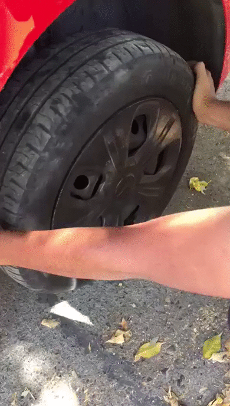
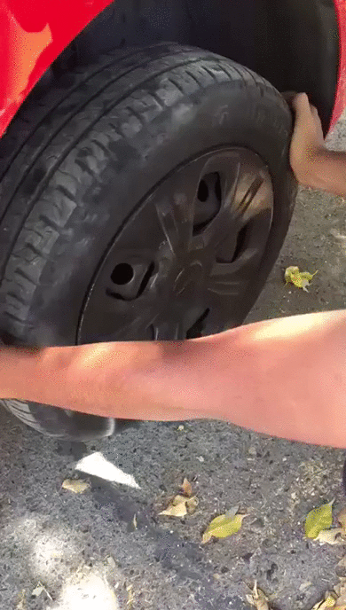

Revisión del Sistema de Dirección y Supensiones
El objetivo principal de la revisión de los sistemas tanto de suspensión como dirección es el de verificar que ambos sistemas se encuentren en óptimas condiciones. Al realizar ciertas pruebas sencillas se puede identificar algún tipo de falla según el tipo de prueba que se ejecute.
Estas pruebas consisten en someter estos sistemas a una “simulación” de los movimientos que realiza el vehículo en la que se utilizara una cantidad de fuerza considerable por lo que es necesario tener la herramienta necesaria y las capacidades para realizarla de manera adecuada.
Es importante tener en cuenta que los fallos en la suspensión y dirección además de provocar inconformidades en la conducción poco a poco desgastan a una velocidad mayor los otros componentes por lo que al realizar esta prueba e identificar alguna falla es estrictamente necesario llevarlo con un experto en mecánica automotriz debido a lo complicado de estos sistemas.
Para la segunda y tercera prueba lo primero que necesitamos es elevar el vehículo ligeramente para que de esta manera ambas llantas delanteras de nuestro Spark queden suspendidas en el aire para trabajar. Existen varias maneras de levantar un auto, con rampas, un elevador, gato de patín entre otras. Dejamos a tu criterio el escoger la que se acomode mejor a tus posibilidades y comodidad. A continuación, te dejamos un link en donde te puedes informar más respecto a esto para que independientemente de la que elijas tengas los cuidados y precauciones necesarias.
CÓMO USAR UN GATO (CLICK)
Al tener colocado el vehículo lo suficientemente despegado del suelo como para colocar tus manos sobre toda la llanta, se comienza con la primera prueba.

Como se muestra en la imagen se utilizan ambos brazos al centro de la llanta en un ángulo de 90° para realizar un movimiento uniforme y de manera repetida empujando ambas manos en sentidos opuestos, de manera que en esta prueba se busca que al realizar estos movimientos la llanta no debe tener ninguna oscilación por lo que al ejecutar esta prueba si se detecta cualquier movimiento es probable que los baleros del sistema de suspensión estén dañados y sea necesario cambiarlos por lo que acude con un mecánico para que logren cambiar estos componentes sin ningún riesgo.
La ultima prueba en la llanta se realizará de manera más sencilla que la anterior, pero utilizando el mismo principio. Se requiere empujar la llanta hacia arriba desde la parte inferior de la llanta con mucha fuerza de preferencia haciendo palanca con una barra de metal y usando como punto de apoyo el suelo para intentar levantar la llanta con movimientos repetitivos y seguidos, buscando que haya algún movimiento para detectar si el sistema de suspensiones se encuentra fallando, en caso de que haya movimientos ya antes mencionados, se necesita una revisión realizada por un experto para corregir ese problema.
Por último, en las suspensiones se pueden detectar durante el manejo o mediante una inspección visual los siguientes problemas
-Vibraciones en el volante: Si notamos que el volante vibra especialmente al frenar en una curva, es probable que el amortiguador delantero del lado del que se inclina esté defectuoso.
-Desgaste de los neumáticos: Cuando los neumáticos se desgastan de forma irregular pese a mantenerse a mismos niveles de presión, es común que haya un desajuste en la suspensión del automóvil.
-Suspensión demasiado dura o blanda: Los resortes cedidos, una mala presión de los neumáticos o directamente unos amortiguadores mal ajustados pueden tener como consecuencia tanto una suspensión demasiado dura, que dificulte e incomode la conducción o una demasiado blanda que nos haga perder el control del vehículo.
-El auto se “recarga” hacia un lado: Esto puede pasar mientras el auto está parado, lo cual es grave. Si se ladea al tomar curvas también puede ser signo de una falla en el sistema de suspensión. Asegúrate de que las llantas se encuentren en un nivel de presión correcto. Si esto es así, es hora de reparar la suspensión.

Como se muestra en la imagen anterior la prueba realizada en esta ocasión es muy similar a la prueba número dos del sistema de suspensión, tomando en cuenta que el vehículo debe estar elevado(mencionado en el apartado anterior) para poder trabajar en ambas llantas, en esta ocasión en vez de hacer la prueba de manera vertical se hace de manera horizontal llevando ambas manos a los costados de la llanta para realizar un movimiento brusco pero preciso para buscar si es que se detecta algún movimiento durante la realización de la prueba, por lo que si existe algún movimiento quiere decir que nuestra dirección presenta alguna falla y es necesario llevarlo con un experto.
Por último, en las direcciones se pueden detectar durante el manejo el siguiente problema
-La dirección no responde: Quizás te cuesta trabajo dar la vuelta. A lo mejor el auto se desvía a pesar de que mantienes el volante fijo. Una de las posibles causas es que tu auto requiere cambio de líquido de dirección hidráulica. De cualquier forma, es muy probable que se trate de una falla en el sistema de suspensión.
Estas pruebas consisten en someter estos sistemas a una “simulación” de los movimientos que realiza el vehículo en la que se utilizara una cantidad de fuerza considerable por lo que es necesario tener la herramienta necesaria y las capacidades para realizarla de manera adecuada.
Es importante tener en cuenta que los fallos en la suspensión y dirección además de provocar inconformidades en la conducción poco a poco desgastan a una velocidad mayor los otros componentes por lo que al realizar esta prueba e identificar alguna falla es estrictamente necesario llevarlo con un experto en mecánica automotriz debido a lo complicado de estos sistemas.
1.- Pruebas al sistema de suspensión
La primera prueba que se realiza es bastante sencilla con el vehículo apagado y detenido totalmente, se necesita aplicar fuerza en el vehículo justo encima de las llantas delanteras es decir a los costados del cofre, primero de una llanta y luego de otra. Si al empujar el vehículo hacia abajo en repetidas ocasiones aplicando mucha fuerza, el auto brinca demasiado y tarda mucho en regresar a la posición inicial, esto nos indicara que el sistema de suspensión tiene un fallo y lo más común para esta prueba es que los amortiguadores sean los causantes por lo que se necesita una inspección de un profesional para reparar esta falla que pudiera ocasionar más desgaste en todo el sistema.Para la segunda y tercera prueba lo primero que necesitamos es elevar el vehículo ligeramente para que de esta manera ambas llantas delanteras de nuestro Spark queden suspendidas en el aire para trabajar. Existen varias maneras de levantar un auto, con rampas, un elevador, gato de patín entre otras. Dejamos a tu criterio el escoger la que se acomode mejor a tus posibilidades y comodidad. A continuación, te dejamos un link en donde te puedes informar más respecto a esto para que independientemente de la que elijas tengas los cuidados y precauciones necesarias.
CÓMO USAR UN GATO (CLICK)
Al tener colocado el vehículo lo suficientemente despegado del suelo como para colocar tus manos sobre toda la llanta, se comienza con la primera prueba.
Como se muestra en la imagen se utilizan ambos brazos al centro de la llanta en un ángulo de 90° para realizar un movimiento uniforme y de manera repetida empujando ambas manos en sentidos opuestos, de manera que en esta prueba se busca que al realizar estos movimientos la llanta no debe tener ninguna oscilación por lo que al ejecutar esta prueba si se detecta cualquier movimiento es probable que los baleros del sistema de suspensión estén dañados y sea necesario cambiarlos por lo que acude con un mecánico para que logren cambiar estos componentes sin ningún riesgo.
La ultima prueba en la llanta se realizará de manera más sencilla que la anterior, pero utilizando el mismo principio. Se requiere empujar la llanta hacia arriba desde la parte inferior de la llanta con mucha fuerza de preferencia haciendo palanca con una barra de metal y usando como punto de apoyo el suelo para intentar levantar la llanta con movimientos repetitivos y seguidos, buscando que haya algún movimiento para detectar si el sistema de suspensiones se encuentra fallando, en caso de que haya movimientos ya antes mencionados, se necesita una revisión realizada por un experto para corregir ese problema.
Por último, en las suspensiones se pueden detectar durante el manejo o mediante una inspección visual los siguientes problemas
-Vibraciones en el volante: Si notamos que el volante vibra especialmente al frenar en una curva, es probable que el amortiguador delantero del lado del que se inclina esté defectuoso.
-Desgaste de los neumáticos: Cuando los neumáticos se desgastan de forma irregular pese a mantenerse a mismos niveles de presión, es común que haya un desajuste en la suspensión del automóvil.
-Suspensión demasiado dura o blanda: Los resortes cedidos, una mala presión de los neumáticos o directamente unos amortiguadores mal ajustados pueden tener como consecuencia tanto una suspensión demasiado dura, que dificulte e incomode la conducción o una demasiado blanda que nos haga perder el control del vehículo.
-El auto se “recarga” hacia un lado: Esto puede pasar mientras el auto está parado, lo cual es grave. Si se ladea al tomar curvas también puede ser signo de una falla en el sistema de suspensión. Asegúrate de que las llantas se encuentren en un nivel de presión correcto. Si esto es así, es hora de reparar la suspensión.
2.- Pruebas al sistema de Dirección

Como se muestra en la imagen anterior la prueba realizada en esta ocasión es muy similar a la prueba número dos del sistema de suspensión, tomando en cuenta que el vehículo debe estar elevado(mencionado en el apartado anterior) para poder trabajar en ambas llantas, en esta ocasión en vez de hacer la prueba de manera vertical se hace de manera horizontal llevando ambas manos a los costados de la llanta para realizar un movimiento brusco pero preciso para buscar si es que se detecta algún movimiento durante la realización de la prueba, por lo que si existe algún movimiento quiere decir que nuestra dirección presenta alguna falla y es necesario llevarlo con un experto.
Por último, en las direcciones se pueden detectar durante el manejo el siguiente problema
-La dirección no responde: Quizás te cuesta trabajo dar la vuelta. A lo mejor el auto se desvía a pesar de que mantienes el volante fijo. Una de las posibles causas es que tu auto requiere cambio de líquido de dirección hidráulica. De cualquier forma, es muy probable que se trate de una falla en el sistema de suspensión.